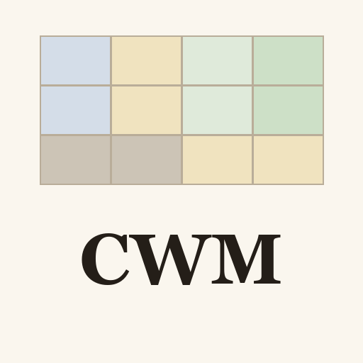

Weigh claims. Check sources.
By Frank Böhm · Arcencilo Family Project · Ibiza.
Verified individual publisher: Frank Gerold Boehm.
Describe a claim or situation in ordinary language, or ask for a short synthetic example. CWM proposes locations on the Claim Matrix and Witness Matrix, explains the available basis, and suggests the next useful check.
An assessment card identifies the claim, its matrix location, the source's location where assignable, the reasons, and a useful next check. Missing information remains visible. Confidence alone does not establish credibility, and an unfamiliar source is not automatically an unreliable one.
The plugin uses CWM v1.0, with the exact published cell labels and reference papers. It works with supplied text and attachments that ChatGPT can actually inspect. It needs no external service connection.
Availability: CWM is being prepared for public review. There is no public directory installation link yet. The three papers and printable matrices are available now.
Privacy and support · Get help · Use and limits · GitHub repository